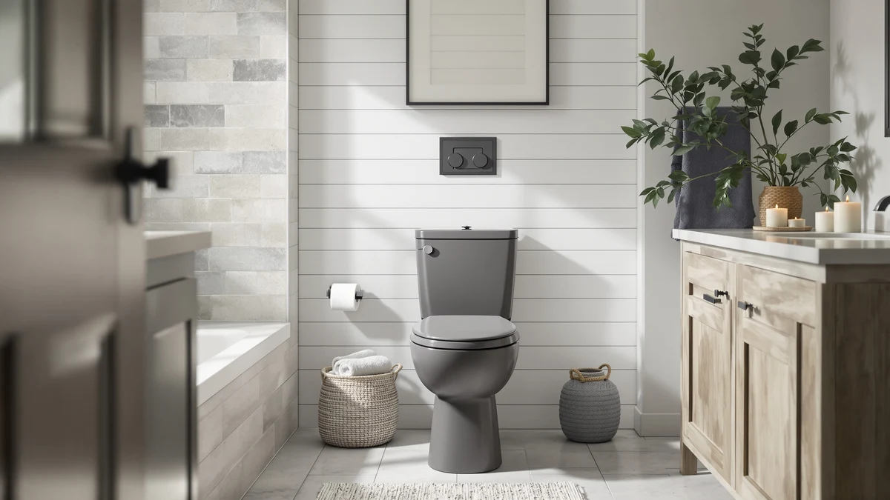

How to Measure Rough-In for a Toilet (2026): The 5-Minute Check
Prices and picks verified as of August 2026. Independent, reader-supported reviews.


Things to Know Before You Buy
- Standard rough-in sizes are 10, 12, and 14 inches, and 12 inches covers the vast majority of US homes.
- You measure from the finished wall to the center of the closet bolts, never from the baseboard or the tank.
- Baseboard trim can throw off your reading by half an inch or more if you measure from it instead of the wall.
- A corner toilet or a toilet against a tank enclosure needs the same wall-to-bolt measurement, just with extra care around obstructions.
- If your measurement falls between two standard sizes, round to the nearest one rather than assuming a custom rough-in.
Knowing how to measure rough-in for a toilet is the first thing to get right before you buy a replacement, because the wrong number means a toilet that won't bolt down to your existing flange. The rough-in is simply the distance from the finished wall behind the toilet to the center of the two closet bolts at its base, and most US homes use a 12-inch rough-in as the default.
You don't need a plumber or any special equipment to get this measurement. A tape measure, five minutes, and a clear line of sight to the base of your toilet are enough. Below is the exact process we recommend, along with the mistakes that trip up most people the first time they try it.
What You'll Need
- Supplies: Pencil and paper (or phone notes) to record the measurement, painter's tape (optional, to mark the bolt center on the floor), flashlight (helpful in dim bathrooms)
- Tools: Tape measure, flat-head screwdriver (to pry off bolt caps if needed)
Step 1: Clear the floor around the toilet
Before you touch a tape measure, clear the floor around the toilet. Pull the bath mat aside, move the trash can, and take away anything leaning against the tank. You want a straight, unobstructed line from the wall behind the toilet to its base, because that line is exactly what you'll be measuring in a moment.
This step matters more than it sounds. A folded rug or a wedged-in plunger can nudge your tape measure off center and produce a reading that's off by half an inch, which is enough to send you home with the wrong toilet. Take thirty seconds here and the rest of the process goes faster.
Step 2: Locate the closet bolts at the base
Every toilet sits on two closet bolts (sometimes called flange bolts) that anchor the base to the floor flange below. Look at the base of your current toilet and you'll usually see two plastic caps, one on each side, roughly in line with the middle of the bowl. Pop those caps off with a flat-head screwdriver if they don't lift easily by hand.
These bolts are your reference point for the entire measurement, because the rough-in distance is defined as the space between the finished wall and the center of those bolts, not the edge of the toilet or the tank. If you're measuring for a new installation with no toilet in place yet, look for the flange itself, the round fitting set into the floor where the bolts protrude.
Step 3: Measure from the wall to the bolt centers
Hook the end of your tape measure against the finished wall directly behind the toilet, at floor level. Stay off the baseboard for this reading and instead find the actual wall surface, even if that means measuring from a point just above where the baseboard meets the floor.
Pull the tape measure forward until it crosses the center of the closet bolts, then read the number. This is the core of learning how to measure rough-in for a toilet: a straight line from wall to bolt center, nothing more. Most homes land on 12 inches, which is the industry standard, but older houses and tight bathrooms sometimes use 10 or 14 inches instead.
Step 4: Account for the baseboard
Baseboard trim throws off more rough-in measurements than any other factor. If your tape measure rests against the baseboard instead of the wall itself, you can end up reading a full half-inch to inch shorter than the true rough-in distance, since baseboard typically adds that much depth.
To correct for this, measure from the wall surface above the baseboard, or subtract the baseboard's thickness from your reading if you can't get the tape flat against the wall. A quarter-inch of baseboard is common, but thicker colonial-style trim can run closer to three-quarters of an inch, so check yours before you finalize the number.
Step 5: Round to the nearest standard size
Once you have a clean reading, round it to the nearest standard rough-in size: 10, 12, or 14 inches. Manufacturers build toilets around these three numbers, and a measurement of 11.75 or 12.25 inches almost always means you have a standard 12-inch rough-in with a small margin of measuring error.
Write the number down and keep it with you when you shop, since it's the single spec that determines whether a toilet will bolt down cleanly in your bathroom. Any one-piece toilet you're considering should list its rough-in size on the product page or spec sheet before you add it to your cart.
Common Mistakes to Avoid
The most common error when people measure rough-in for a toilet is starting from the baseboard instead of the wall. Baseboard trim adds anywhere from a quarter-inch to nearly an inch of extra depth, and that gap is enough to make a true 12-inch rough-in read as 11.25 or 11.5 inches. If your number lands just under a standard size, check whether baseboard is throwing off the reading before you assume you have a nonstandard rough-in.
Another frequent mistake is measuring to the front or back edge of the closet bolts rather than their center. The bolts have some width to them, and grabbing the wrong edge can shift your reading by half an inch in either direction. Look straight down at the bolt and aim for its midpoint every time.
People also sometimes measure with the old toilet still in place and the tank pushed back against the wall, which can compress or distort the reading if the tank isn't sitting flush. Pull the tape measure at floor level, below the tank, where the bolts are clearly visible.
Finally, don't guess your rough-in size based on the toilet's age or brand. Rough-in distances vary by installation, not by manufacturer, and two homes built in the same year can easily have different flange placements. Measure every time you replace a toilet, even if you're fairly sure you remember the number from last time. A five-minute check now saves you a return shipment and a second trip to the hardware store later.
Our Top Picks
Once you know your rough-in number, shopping gets a lot simpler. Every toilet below fits a standard 12-inch rough-in, which covers most US bathrooms, and we picked them by comparing specs, verified owner reviews, and pricing rather than by running our own lab tests.

Editor's Pick
HOROW HWMT-8733 Small Compact One
A compact 12-inch rough-in toilet that owners consistently praise for fitting tight bathrooms without sacrificing bowl comfort.
$224.00
Check Price on Amazon
Best Value
Casta Diva Compact One Piece
Reviewers consistently note strong flushing performance for the price, making it a solid match once you've confirmed your standard rough-in.
$248.99
Check Price on Amazon
Premium Choice
WinZo Compact One Piece Toilet
A step up in features and finish, according to verified buyers, for anyone who wants a premium feel once the rough-in fit is settled.
$328.99
Check Price on AmazonFrequently Asked Questions
What is a standard toilet rough-in size?
Most US toilets use a 12-inch rough-in, measured from the finished wall to the center of the closet bolts. Older homes and some tight bathrooms use 10 or 14 inches instead, which is why you should always measure rather than assume.
Can I measure rough-in without removing the toilet?
Yes. You only need to see the closet bolts at the base, which are visible without removing the toilet. Pop off the plastic caps if they're covering the bolts, then measure from the wall to the bolt centers as described above.
What happens if I buy the wrong rough-in size?
A toilet with the wrong rough-in size won't line up with your floor flange and closet bolts, so it either won't sit flush against the wall or the bolts won't reach the mounting holes. You'll need to return it and remeasure before ordering a replacement.
Does the toilet tank affect the rough-in measurement?
No. The rough-in measurement is based on the bolts at the base of the bowl, not the tank. A larger tank may need more clearance behind it, but that's a separate consideration from the rough-in distance itself.
Is a 10-inch rough-in toilet harder to find?
Yes, relatively speaking. Most manufacturers build primarily for the 12-inch standard, so 10-inch and 14-inch rough-in toilets have a smaller selection. If your bathroom has a nonstandard rough-in, expect fewer options and plan on double-checking the spec sheet before you buy.
Verdict
Learning how to measure rough-in for a toilet takes about five minutes and a tape measure, and it's the single step that prevents the most common return in toilet shopping. Clear the floor, find the closet bolts, measure from the finished wall to their center, and round to the nearest standard size of 10, 12, or 14 inches. For most US bathrooms, that number comes out to 12 inches, which is why we built our picks list around that standard.
Once you have your number, the HOROW HWMT-8733 is our top pick for most 12-inch rough-in bathrooms, thanks to its compact footprint and consistently positive owner feedback on fit and comfort. Whatever toilet you end up choosing, confirm the rough-in on the spec sheet before you order, and you'll avoid the return shipment that catches so many first-time buyers off guard.